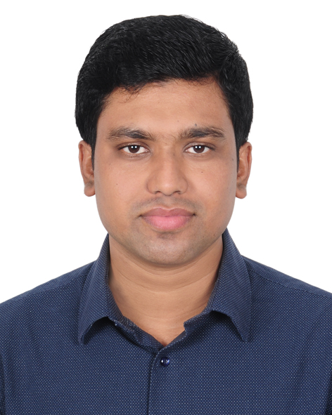

01
Investigate methodically
Trace symptoms to their technical cause before choosing the fix.
Software Engineer · Vienna
I’m Washim Akram, a software engineer working across backend applications, production systems, data integration, and program analysis — with a practical focus on reliable software and thoughtful problem-solving.

About me
I bring professional experience in backend maintenance, incident investigation, testing, and data-driven services together with published machine-learning research and current work in reverse engineering and LLM-assisted program analysis.
My engineering background spans C, C++, PHP, Java, Python, and SQL, with experience using Laravel and Spring Boot for backend development. I also work with Linux, Git, Docker, databases, ETL workflows, and structured data technologies.
I enjoy moving between layers: understanding a difficult production issue, tracing data through a backend service, designing an analysis pipeline, or explaining a technical finding clearly to a team.
I’m in the final year of my M.Sc. in Computer Science at the University of Vienna and am eligible to work in Austria.
Trace symptoms to their technical cause before choosing the fix.
Validate behavior, data handling, and stability before delivery.
Turn complex findings into useful next steps for technical teams.
Expertise
A broad technical foundation shaped by production engineering, backend data services, and computer-science research.
Object-oriented programming, backend development with Laravel and Spring Boot, algorithms, debugging, testing, and technical problem-solving.
Database services, stored procedures, ETL, connectivity, validation, transformation, and structured-data workflows.
Static analysis, reverse engineering, obfuscation analysis, control flow, algorithm identification, and LLM-assisted code analysis.
Production environments, source control, containers, API testing, networking concepts, agile work, and delivery automation.
Selected work
Web applications for healthcare and education, plus research software exploring program behavior and LLM-assisted analysis.
Web applications
Built a web platform for remote doctor consultations, with Laravel backend APIs for authentication and appointments and MySQL data models. Integrated video consultations and improved request handling and validation to keep appointment and session data consistent during simultaneous use.
Built a Laravel and MySQL system for student thesis submissions and supervision. Developed backend services and relational data models for students, supervisors, and project records, with supervisor assignment and progress tracking.
Visit the live application ↗Developed a PHP web application for collecting and analyzing student feedback about courses and instructors. Implemented backend storage and queries to generate department-level feedback summaries.
Academic research · University of Vienna
Developed a Python analysis pipeline to identify algorithms after control-flow flattening with Tigress. Combined static semantic features, rule-based classification, and LLM-assisted analysis, then verified predictions against JSON ground truth.
Built a Python framework to generate C programs and evaluate LLM reconstruction of call chains up to 1,000 functions, including direct calls, function pointers, pointer arrays, structures, and switch-based dispatch.
Publications
Two additional co-authored publications in applied machine learning, published in 2022.
Advances in Information, Communication and Cybersecurity · pp. 259–273
Read publication ↗8th International Conference on Computing and Data Engineering (ICCDE 2022) · pp. 86–91
Read publication ↗Experience
Backend services, production support, data workflows, software testing, and technical education across international teams.
Limerick Resources Ltd.
Nassprotech
Nassprotech
Daffodil International University
Education
Formal study in software engineering and computer science, with current research focused on securing agentic reverse-engineering systems.
University of Vienna · Austria
Trust-Boundary Enforcement for Agentic Reverse Engineering of Obfuscated Binaries: Securing LLM Agents Against Adversarial Artifacts and Tool-Chain Manipulation
Daffodil International University · Bangladesh
CGPA: 3.95 / 4.00
German equivalent: 1.1
Get in touch
I’m open to software engineering opportunities and thoughtful collaborations in Vienna and beyond.